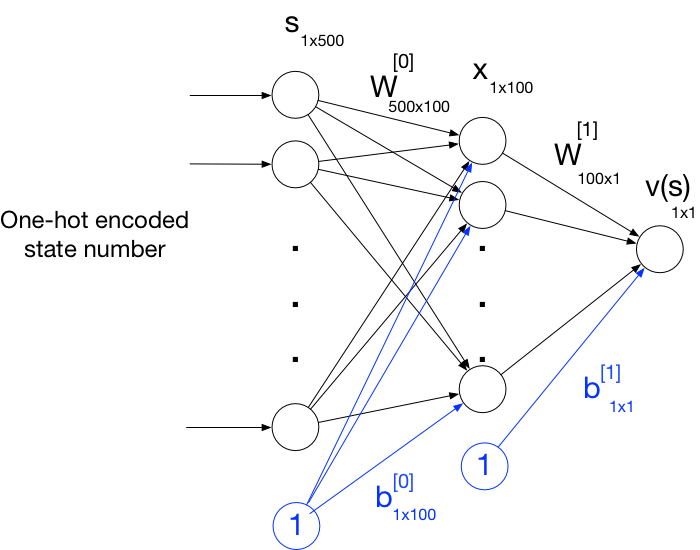
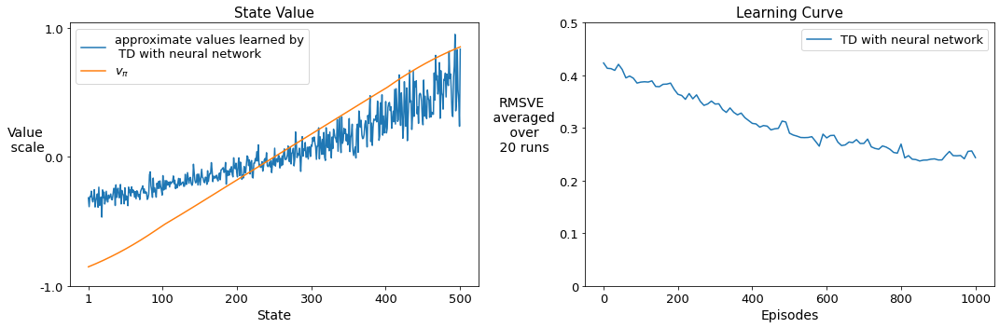
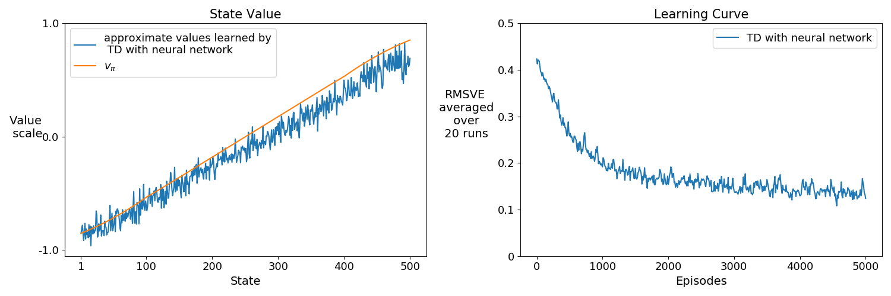
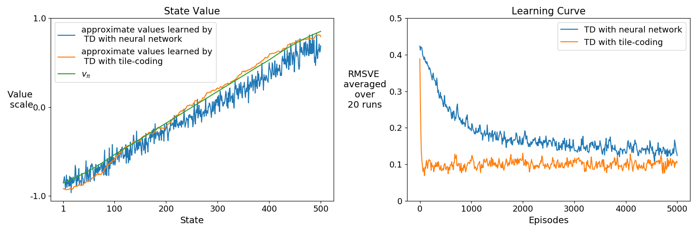

Assignment 2 - Semi-gradient TD with a Neural Network
Welcome to Course 3 Programming Assignment 2. In the previous assignment, you implemented semi-gradient TD with State Aggregation for solving a policy evaluation task. In this assignment, you will implement semi-gradient TD with a simple Neural Network and use it for the same policy evaluation problem.
You will implement an agent to evaluate a fixed policy on the 500-State Randomwalk. As you may remember from the previous assignment, the 500-state Randomwalk includes 500 states. Each episode begins with the agent at the center and terminates when the agent goes far left beyond state 1 or far right beyond state 500. At each time step, the agent selects to move either left or right with equal probability. The environment determines how much the agent moves in the selected direction.
In this assignment, you will:
- Implement stochastic gradient descent method for state-value prediction.
- Implement semi-gradient TD with a neural network as the function approximator and Adam algorithm.
- Compare performance of semi-gradient TD with a neural network and semi-gradient TD with tile-coding.
Packages
We import the following libraries that are required for this assignment:
- numpy : Fundamental package for scientific computing with Python.
- matplotlib : Library for plotting graphs in Python.
- RL-Glue : Library for reinforcement learning experiments.
- tqdm : A package to display progress bar when running experiments.
- BaseOptimizer : An abstract class that specifies the optimizer API for Agent.
- plot_script : Custom script to plot results.
- RandomWalkEnvironment : The Randomwalk environment script from Course 3 Assignment 1.
1 | # Do not modify this cell! |
Section 1: Create semi-gradient TD with a Neural Network
In this section, you will implement an Agent that learns with semi-gradient TD with a neural network. You will use a neural network with one hidden layer. The input of the neural network is the one-hot encoding of the state number. We use the one-hot encoding of the state number instead of the state number itself because we do not want to build the prior knowledge that integer number inputs close to each other have similar values. The hidden layer contains 100 rectifier linear units (ReLUs) which pass their input if it is bigger than one and return 0 otherwise. ReLU gates are commonly used in neural networks due to their nice properties such as the sparsity of the activation and having non-vanishing gradients. The output of the neural network is the estimated state value. It is a linear function of the hidden units as is commonly the case when estimating the value of a continuous target using neural networks.
The neural network looks like this:

For a given input, $s$, value of $s$ is computed by:
where $W^{[0]}$, $b^{[0]}$, $W^{[1]}$, $b^{[1]}$ are the parameters of the network and will be learned when training the agent.
1-1: Implement helper methods
Before implementing the agent, you first implement some helper functions which you will later use in agent’s main methods.
Implement get_value()
First, you will implement get_value() method which feeds an input $s$ into the neural network and returns the output of the network $v$ according to the equations above. To implement get_value(), take into account the following notes:
get_value()gets the one-hot encoded state number denoted by s as an input.get_value()receives the weights of the neural network as input, denoted by weights and structured as an array of dictionaries. Each dictionary corresponds to weights from one layer of the neural network to the next. Each dictionary includes $W$ and $b$. The shape of the elements in weights are as follows:- weights[0][“W”]: num_states $\times$ num_hidden_units
- weights[0][“b”]: 1 $\times$ num_hidden_units
- weights[1][“W”]: num_hidden_units $\times$ 1
- weights[1][“b”]: 1 $\times$ 1
The input of the neural network is a sparse vector. To make computation faster, we take advantage of input sparsity. To do so, we provided a helper method
my_matmul(). Make sure that you usemy_matmul()for all matrix multiplications except for element-wise multiplications in this notebook.- The max operator used for computing $x$ is element-wise.
1 | def my_matmul(x1, x2): |
1 | # ----------- |
Run the following code to test your implementation of the get_value() function:
1 | # ----------- |
Estimated value: [[-0.21915705]]
Expected output:
Estimated value: [[-0.21915705]]
Implement get_gradient()
You will also implement get_gradient() method which computes the gradient of the value function for a given input, using backpropagation. You will later use this function to update the value function.
As you know, we compute the value of a state $s$ according to:
To update the weights of the neural network ($W^{[0]}$, $b^{[0]}$, $W^{[1]}$, $b^{[1]}$), we compute the gradient of $v$ with respect to the weights according to:
where $\odot$ denotes element-wise matrix multiplication and $I_{x>0}$ is the gradient of the ReLU activation function which is an indicator whose $i$th element is 1 if $x[i]>0$ and 0 otherwise.
1 | # ----------- |
Run the following code to test your implementation of the get_gradient() function:
1 | # ----------- |
Expected output:
grads[0]["W"]
[[0. 0. ]
[0. 0. ]
[0. 0. ]
[0.76103773 0.12167502]
[0. 0. ]]
grads[0]["b"]
[[0.76103773 0.12167502]]
grads[1]["W"]
[[0.69198983]
[0.82403662]]
grads[1]["b"]
[[1.]]
Implement stochastic gradient descent method for state-value prediction
In this section, you will implement stochastic gradient descent (SGD) method for state_value prediction. Here is the basic SGD update for state-value prediction with TD:
At each time step, we update the weights in the direction $g_t = \delta_t \nabla \hat{v}(S_t,\mathbf{w_t})$ using a fixed step-size $\alpha$. $\delta_t = R_{t+1} + \gamma \hat{v}(S_{t+1},\mathbf{w_{t}}) - \hat{v}(S_t,\mathbf{w_t})$ is the TD-error. $\nabla \hat{v}(S_t,\mathbf{w_{t}})$ is the gradient of the value function with respect to the weights.
The following cell includes the SGD class. You will complete the update_weight() method of SGD assuming that the weights and update g are provided.
As you know, in this assignment, we structured the weights as an array of dictionaries. Note that the updates $g_t$, in the case of TD, is $\delta_t \nabla \hat{v}(S_t,\mathbf{w_t})$. As a result, $g_t$ has the same structure as $\nabla \hat{v}(S_t,\mathbf{w_t})$ which is also an array of dictionaries.
1 | # ----------- |
Run the following code to test your implementation of the update_weights() function:
1 | # ----------- |
Expected output:
updated_weights[0]["W"]
[[ 1.17899492 0.53656321]
[ 0.58008221 1.47666572]
[ 1.01909411 -1.10248056]
[ 0.72490408 0.06828853]
[-0.20609725 0.69034095]]
updated_weights[0]["b"]
[[-0.18484533 0.92844539]]
updated_weights[1]["W"]
[[0.70488257]
[0.58150878]]
updated_weights[1]["b"]
[[0.88467086]]
Adam Algorithm
In this assignment, instead of using SGD for updating the weights, we use a more advanced algorithm called Adam. The Adam algorithm improves the SGD update with two concepts: adaptive vector step-sizes and momentum. It keeps estimates of the mean and second moment of the updates, denoted by $\mathbf{m}$ and $\mathbf{v}$ respectively:
Given that $\mathbf{m}$ and $\mathbf{v}$ are initialized to zero, they are biased toward zero. To get unbiased estimates of the mean and second moment, Adam defines $\mathbf{\hat{m}}$ and $\mathbf{\hat{v}}$ as:
The weights are then updated as follows:
When implementing the agent you will use the Adam algorithm instead of SGD because it is more efficient. We have already provided you the implementation of the Adam algorithm in the cell below. You will use it when implementing your agent.
1 | # --------------- |
1-2: Implement Agent Methods
In this section, you will implement agent_init(), agent_start(), agent_step(), and agent_end().
In agent_init(), you will:
- specify the neural network structure by filling self.layer_size with the size of the input layer, hidden layer, and output layer.
- initialize the network’s parameters. We show the parameters as an array of dictionaries, self.weights, where each dictionary corresponds to weights from one layer to the next. Each dictionary includes $W$ and $b$.
This initialization heuristic is commonly used when using ReLU gates and helps keep the output of a neuron from getting too big or too small. To initialize the network’s parameters, use self.rand_generator.normal() which draws random samples from a normal distribution. The parameters of self.rand_generator.normal are mean of the distribution, standard deviation of the distribution, and output shape in the form of tuple of integers.
In agent_start(), you will:
- specify self.last_state and self.last_action.
In agent_step() and agent_end(), you will:
- compute the TD error using $v(S_t)$ and $v(S_{t+1})$. To compute the value function for $S_t$ and $S_{t+1}$, you will get their one-hot encoding using
one_hot()method that we provided below. You feed the one-hot encoded state number to the neural networks usingget_value()method that you implemented above. Note thatone_hot()method returns the one-hot encoding of a state as a numpy array of shape (1, num_states). - retrieve the gradients using
get_gradient()function that you implemented. - use Adam_algorithm that we provided to update the neural network’s parameters, self.weights.
- use
agent_policy()method to select actions with. (only inagent_step())
1 | # --------------- |
1 | # ----------- |
Run the following code to test your implementation of the agent_init() function:
1 | # ----------- |
layer_size: [5 2 1]
Expected output:
layer_size: [5 2 1]
weights[0]["W"] shape: (5, 2)
weights[0]["b"] shape: (1, 2)
weights[1]["W"] shape: (2, 1)
weights[1]["b"] shape: (1, 1)
weights[0]["W"]
[[ 1.11568467 0.25308164]
[ 0.61900825 1.4172653 ]
[ 1.18114738 -0.6180848 ]
[ 0.60088868 -0.0957267 ]
[-0.06528133 0.25968529]]
weights[0]["b"]
[[0.09110115 0.91976332]]
weights[1]["W"]
[[0.76103773]
[0.12167502]]
weights[1]["b"]
[[0.44386323]]
Run the following code to test your implementation of the agent_start() function:
1 | # ----------- |
Expected output:
Agent state: 250
Agent selected action: 1
Run the following code to test your implementation of the agent_step() function:
1 | # ----------- |
Expected output:
updated_weights[0]["W"]
[[ 1.10893459 0.30763738]
[ 0.63690565 1.14778865]
[ 1.23397791 -0.48152743]
[ 0.72792093 -0.15829832]
[ 0.15021996 0.39822163]]
updated_weights[0]["b"]
[[0.29798822 0.96254535]]
updated_weights[1]["W"]
[[0.76628754]
[0.11486511]]
updated_weights[1]["b"]
[[0.58530057]]
Agent last state: 1
Agent last action: 1
Run the following code to test your implementation of the agent_end() function:
1 | # ----------- |
Expected output:
updated_weights[0]["W"]
[[ 1.10893459 0.30763738]
[ 0.63690565 1.14778865]
[ 1.17531054 -0.51043162]
[ 0.75062903 -0.13736817]
[ 0.15021996 0.39822163]]
updated_weights[0]["b"]
[[0.30846523 0.95937346]]
updated_weights[1]["W"]
[[0.68861703]
[0.15986364]]
updated_weights[1]["b"]
[[0.586074]]
Section 2 - Run Experiment
Now that you implemented the agent, we can run the experiment. Similar to Course 3 Programming Assignment 1, we will plot the learned state value function and the learning curve of the TD agent. To plot the learning curve, we use Root Mean Squared Value Error (RMSVE).
2-1: Run Experiment for Semi-gradient TD with a Neural Network
We have already provided you the experiment/plot code, so you can go ahead and run the two cells below.
Note that running the cell below will take approximately 12 minutes.
1 | # --------------- |
Setting - Neural Network with 100 hidden units

'/home/jovyan/work/release/TD-NN/results.zip'
You plotted the learning curve for 1000 episodes. As you can see the RMSVE is still decreasing. Here we provide the pre-computed result for 5000 episodes and 20 runs so that you can see the performance of semi-gradient TD with a neural network after being trained for a long time.

Does semi-gradient TD with a neural network find a good approximation within 5000 episodes?
As you may remember from the previous assignment, semi-gradient TD with 10-state aggregation converged within 100 episodes. Why is TD with a neural network slower?
Would it be faster if we decrease the number of hidden units? Or what about if we increase the number of hidden units?
2-2: Compare Performance of Semi-gradient TD with a Neural Network and Semi-gradient TD with Tile-coding
In this section, we compare the performance of semi-gradient TD with a Neural Network and semi-gradient TD with tile-coding. Tile-coding is a kind of coarse coding that uses multiple overlapping partitions of the state space to produce features. For tile-coding, we used 50 tilings each with 6 tiles. We set the step-size for semi-gradient TD with tile-coding to $\frac{0.1}{tilings}$. See the figure below for the comparison between semi-gradient TD with tile-coding and semi-gradient TD with a neural network and Adam algorithm. This result is for 5000 episodes and 20 runs:

How are the results?
Semi-gradient TD with tile-coding is much faster than semi-gradient TD with a neural network. Why?
Which method has a lower RMSVE at the end of 5000 episodes?
Wrapping up!
You have successfully implemented Course 3 Programming Assignment 2.
You have implemented semi-gradient TD with a Neural Network and Adam algorithm in 500-state Random Walk.
You also compared semi-gradient TD with a neural network and semi-gradient TD with tile-coding.
From the experiments and lectures, you should be more familiar with some of the strengths and weaknesses of using neural networks as the function approximator for an RL agent. On one hand, neural networks are powerful function approximators capable of representing a wide class of functions. They are also capable of producing features without exclusively relying on hand-crafted mechanisms. On the other hand, compared to a linear function approximator with tile-coding, neural networks can be less sample efficient. When implementing your own Reinforcement Learning agents, you may consider these strengths and weaknesses to choose the proper function approximator for your problems.